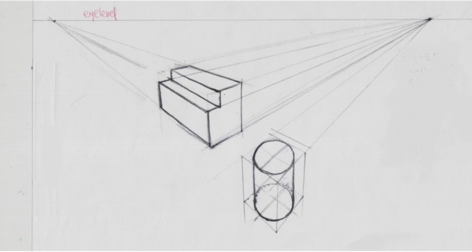
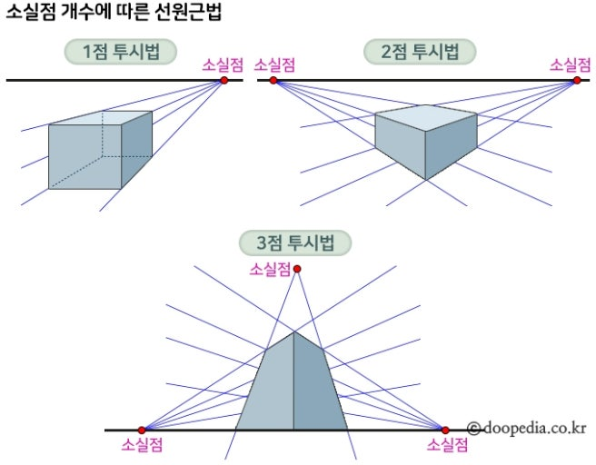
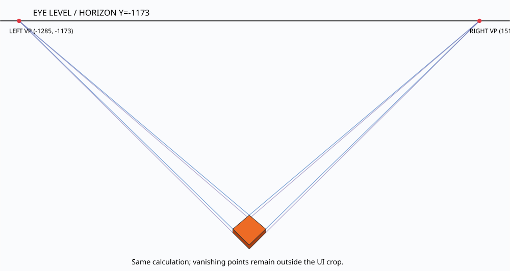
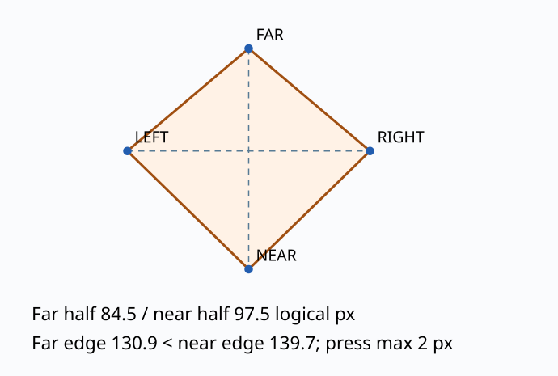
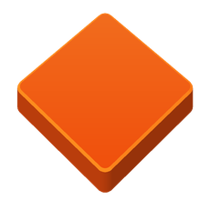
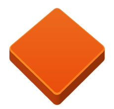
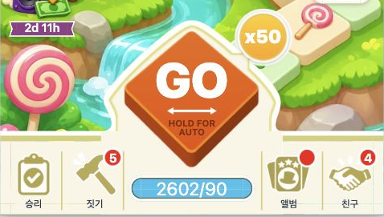

입체 버튼 제작 · 실제 2점 투시와 작은 눌림
계산/제작 제안입니다. 원본 게임 카메라를 확인했다는 뜻이 아닙니다. r300 native 저장·실제 mouse/Space 확인. 원본 서체/재질·전체 동등은 미완료입니다.
주신 참고: 눈높이와 소실점부터

사용자 참고1 · 눈높이선·좌우 소실점·입체 대응
사용자 참고2 · 시점에 따른 투시 구분같은 계산의 수평선·좌우 소실점
2점 투시에서는 카메라를 기울이지 않고, 버튼을 눈높이 아래에 둡니다. 깊이축의 두 방향은 같은 눈높이선의 좌우 소실점으로 수렴하고, 수직 두께선은 수직을 유지합니다. UI 크롭 밖에 있는 소실점을 억지로 작은 프레임 안으로 끌어오지 않습니다.


실제 좌표와 카메라/검증값 JSON
한 원형에서 파생한 기본·눌림 원화
캔버스230×220 고정, 밑면 동일. 윗면의 최대 이동2px, 가운데 약1.86px입니다. 기본 두께의약8.3%만 눌러 크게 찌그러지지 않도록 했습니다. 원화에 글자·화살표·외부 그림자는 굽지 않았습니다.

기본 · 100% 논리 크기
눌림 · 확대해서 과장하지 않은2px 변화실제 UI 스튜디오 r300
실제 브라우저 · 기본
실제 mouse3초 유지 · 별도 그림 전환/텍스트2px 전체 상태 그림은 고정하고 콘텐츠 그룹만 별도로 이동합니다. 입체 그림 자체에 이미 그려진 눌림을 다시 전체 translate하지 않습니다. 현재 GO 서체는 원본 글리프와 다르며 최종 완성으로 표시하지 않습니다.
확인 범위
소실점 수렴/먼변보다 긴 가까운변/공통밑면/2px 이내눌림/카메라 앞 점 유효성5검사, 실제 mouse·Space 상태교환/복원. 원본 카메라·눌림 프레임·폰트·재질 동등/실제게임은 별도입니다.
개념 근거: Scratchapixel 원근 투영 설명. 좌표/도면/수치는 자체 계산이며 외부 그림을 생성 자원에 사용하지 않았습니다.